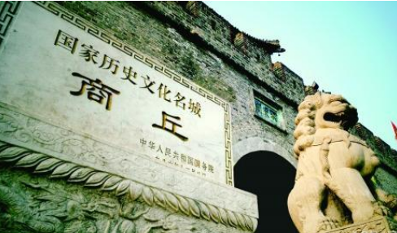

商丘，简称“商”，河南省地级市，商丘介于东经114°49'-116°39'，北纬33°43'-34°52'之间，东西横跨168千米，南北纵贯128千米，东望安徽淮北、江苏徐州，西接河南开封，南襟河南周口、安徽亳州，北临山东菏泽、济宁。商丘市总面积约占河南省总面积的6.4%，区域面积10704平方千米
商丘是中华民族的发祥地之一,是商部族的起源和聚居地、商朝最早的建都地、商人商品商业的发源地、商文明的诞生地，有“华商之源”的美誉。。1986年被确定为全国历史文化名城。商丘是至圣先师孔子的祖籍，古代文哲大师庄周和巾帼英雄花木兰的故里。商丘是商人、商品、商文化的发源地。上古时期，燧人氏、炎帝、“五帝”中的颛顼、帝喾都曾在这里生息。自商汤在此定都建立商朝起，春秋宋国、汉代梁国都在此定都。南朝元颢和南宋赵构曾在此登基。北宋定为陪都名南京。此外历代设郡、州、府，曾名为宋州、睢阳、应天、归德。
著名景观有：商丘古城、应天书院、李香君墓、壮悔堂、张巡祠、穆氏四合院、文庙、梁孝王墓、梁王李太后墓、汉高祖斩蛇碑、陈胜墓
商丘古城位于河南省商丘市睢阳区，为国家历史文化名城、全国重点文物保护单位、国家AAAA级旅游景区、国家水利风景区。
商丘古城已有四千多年历史，现存地上的归德府城于明朝弘治十六年（公元1503年）破土动工，历时八载，于明朝正德六年（公元1511年）竣工，距今已有500余年的历史。商丘古城是当今世界上现存的唯一一座集八卦城、水中城、城摞城三位一体的大型古城遗址。
芒砀山，古称砀山，又称“仙女峰”，为国家AAAAA级景区，位于豫、皖、苏、鲁四省结合部的河南省永城市芒山镇。
芒砀山因汉高祖刘邦斩蛇起义而闻名于世，中国第一位农民起义领袖陈胜亦埋葬于此；孔夫子在此避雨讲学留下了夫子崖、夫子山等景观；中国最大的汉墓群汉梁王墓群星罗棋布，传承千年的芒砀山古庙会每年在此上演，是豫东集山水、人文、民俗为一体的旅游胜地。
阏伯台，古称商丘，民间称火星台、火神台，位于河南省商丘市睢阳区商丘古城西南3里处，是距今4500多年的一处观星台遗址，是中国现存年代最早的观星台，具有极高的科研价值。
阏伯台是帝喾之子阏伯所建造的观星台,阏伯一生不辞劳苦造福于百姓，人们非常敬仰他，把他喻为“火神”，所以此台又叫“火神台”。 阏伯死后，人们就按他的遗愿，将他葬于台下，因其封号为“商”，此台又被称为“商丘”。

- 